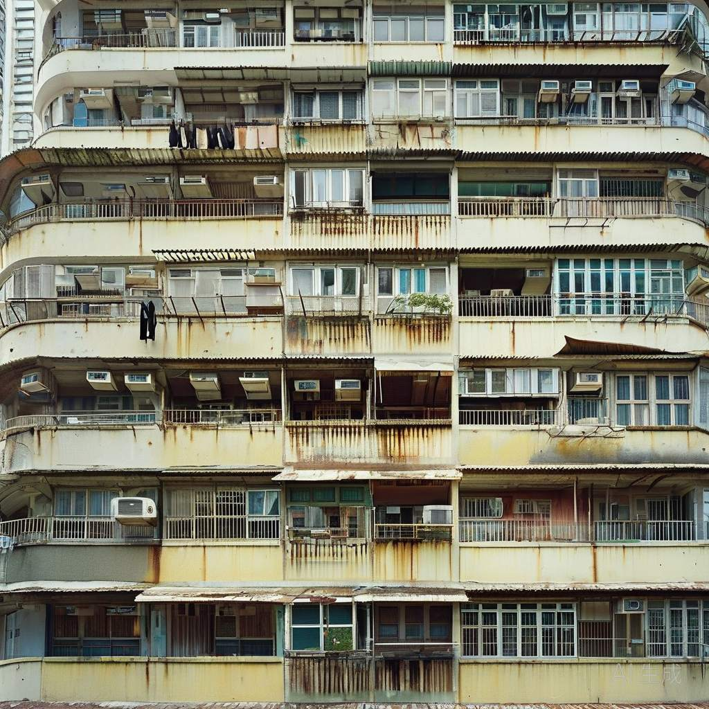
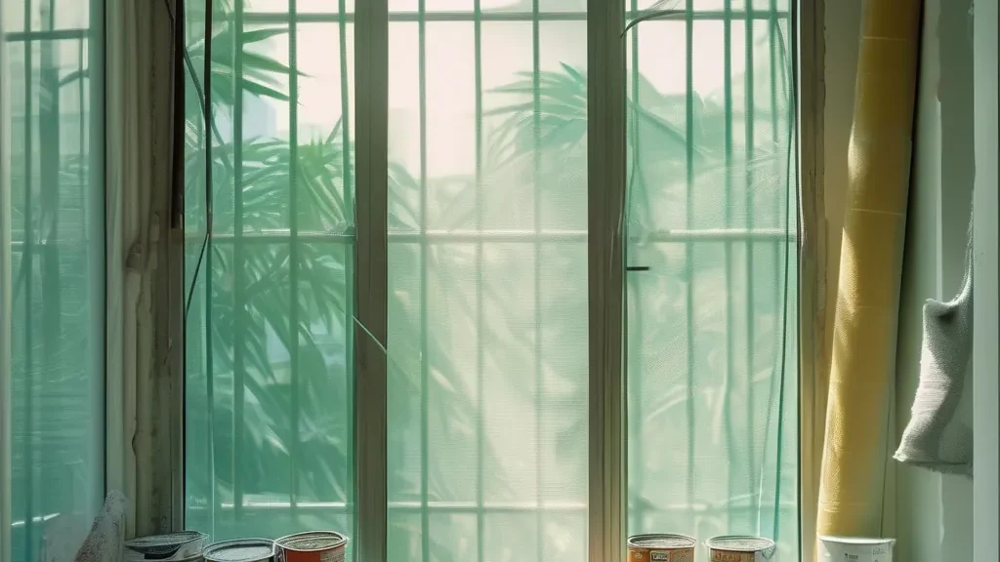
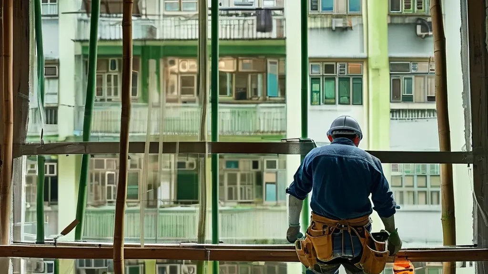
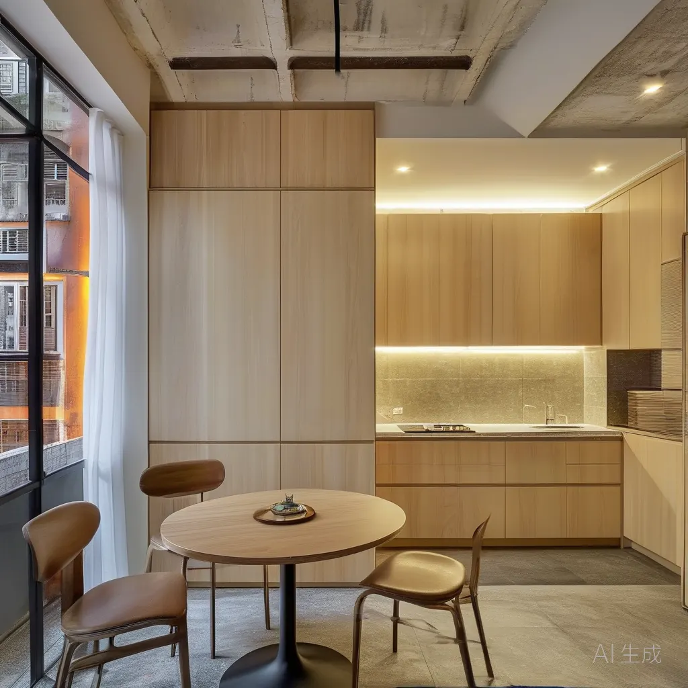

支援局明年1月派驗樓顧問：觀塘380呎郭太點樣排裝修期（昌哥）

📍 場景：觀塘一幢一九八三年落成嘅單幢舊樓｜主訪：昌哥（泥水二十八年）｜記錄：張丹楓｜整理：雲蕾｜日期：2026 年 11 月 25 日｜WhatsApp 報價：852 5190 2328
序幕：通告貼上大堂嗰一晚
十一月二十四日晚上七點，觀塘。郭太約我同雲蕾上她單位，三百八十呎，兩房一廳，一九八三年落成，樓齡四十三年。她十二月本來已經約好清拆師傅，訂造衣櫃嘅圖也畫到七七八八。
問題出在大堂。那天下午法團貼出一張通告，說大廈要展開大維修，外牆、天台、公用喉一併處理，棚架預計明年第一季上樓。郭太把通告影印本攤在餐桌上，指着其中一行問我：「我間屋裝修，關大廈外牆咩事？」
同樣在十一月二十四日，立法會發展事務委員會開會，發展局局長甯漢豪講了另一件事——樓宇維修支援及服務局下月底前正式成立，年底開始陸續公布三張預審名單，目標二○二七年一月起向業主指派驗樓顧問，並在明年首季內為業主展開項目招標。
兩件事，一件貼在大堂，一件在立法會，但落到郭太這三百八十呎身上，是同一個問題：兩條時間表撞在一起，邊條先行？
第一幕：三個日子，決定你幾時可以開工
我把那張通告翻過來，在背面寫了三個日子給郭太看。
第一個日子，今年十二月底前。支援局成立，三張預審名單陸續公布：驗樓顧問一張、負責草擬標書同監工嘅顧問一張、施工承建商一張。局方講明，成立初期會先處理原本「招標妥」積壓落嚟、大約一千八百個未委聘承建商嘅個案。
第二個日子，二○二七年一月。使用支援服務嘅業主，會由政府指派驗樓顧問上門驗樓。局方講得很清楚：一切樓宇維修，重要嘅工作由驗樓開始。
第三個日子，明年第一季。驗完樓，支援局代辦招標、評標，按評分排序推薦最多三份標書；施工階段由監督顧問承擔協助業主監管嘅主體責任。
「即係我要等政府派個顧問上嚟，先可以開始裝修？等到明年三月？」
「唔係。你間屋入面嘅工程，唔需要等支援局。要等嘅係外牆同公用部分。你要改嘅，係工序次序——把外牆要做嘅嘢，全部擠入棚架期；把室內嘅嘢，排在外牆之後。」
這個次序一改，郭太原本十二月開工嘅計劃，就要重新算。因為棚架一上樓，單位窗外全被遮住，泥水、油漆、木工全部要開燈做；而棚架上嘅工人同你單位內嘅師傅，不能同一時間搶同一個窗位、同一部電梯、同一條走廊。
第二幕：棚架期是一次性窗口，錯過就再搭一次
昌哥第二天早上到場，帶了一把伸縮尺、一支電筒、一疊膠袋。他做泥水二十八年，觀塘、牛頭角、油塘嘅舊樓佔了他大半生涯。他不看通告，先看窗。

「你睇窗框底嗰條水痕。」昌哥用電筒照窗台內側，「外面膠邊老化，雨水由窗框同牆身之間滲入。呢個位，棚架未上之前，冇人夠膽吊出去做。棚架一上，一日就補得完。」
他又指着廚房外牆那條去水位：「你個抽氣扇位、冷氣機位、晾衫架位，全部在外牆。你想換鋁窗、想改冷氣機位、想加晾衫架，就要趁棚架期一次做齊。錯過咗，之後再搭一次棚，淨係搭拆同保險，一萬蚊樓上走唔甩，仲要再排期、再通知管理處、再等住戶同意。」
「咁我裝修師傅同棚架師傅，可否同一日開工？」
「同一日可以，同一個窗位就唔可以。棚架工人朝九晚五在外牆，你單位嘅泥水師傅要開窗散塵、要出走廊倒垃圾，兩隊人馬一撞，全部停。我做法係：外牆先做，室內後做，中間留三日緩衝。」
他給的次序很實在：先補外牆裂縫同窗框防水，再換鋁窗，然後才做室內泥水、水電、木工、油漆。原因很簡單——外牆未做好就做室內油漆，一次大雨滲水，油漆白做，牆身發霉，業主只會記得「裝修師傅手工差」。
這些工序有數得計：窗框防水膠要用中性耐候膠，唔可以用普通玻璃膠；外牆補裂縫要開 V 槽、清塵、掃底油，再分兩次批盪，一次過厚批一定會縮裂；每隻鋁窗固定碼間距不可超過六百毫米。這三樣，棚架期內做，成本最低。
第三幕：預審名單、服務費同你要準備嘅三份文件
回到室內。郭太最關心兩件事：要唔要俾錢，以及係唔係一定要用政府嘅服務。
按局方公布，支援局有兩個選項。免費嘅一項，係三張預審名單、招標文件範本、工程合約範本同過往工程造價數據，全部公開，業主可以自己用電子平台招標。標準收費嘅一項，係全流程代辦，按收回成本計算，初步估算每戶成本數千元；申領政府維修資助嘅業主，必須採用標準收費服務。
資助方面，政府把「招標妥」約一點一三億元餘額撥入新服務，連同預留三億元，總額約四點一三億元，其中三點一三億元用於費用寬減，初步聚焦「樓宇更新大行動 2.0」涵蓋嘅樓宇。
「我唔申請資助，係唔係可以自己搵師傅？」
「可以。但你仲係可以用佢張預審名單同造價數據做參考——呢啲係免費嘅。你自己搵顧問，最少要問一句：佢同時手上有幾個項目？」
這句不是隨口問。十一月二十三日聯合特遣隊交代第二輪行動時提過，有顧問公司嘅認可人士同一時間負責接近九十個項目。一個人手上有九十個項目，你間樓嘅驗樓報告係邊個簽、幾時簽，值得你追問。
至於室內裝修這邊，郭太要準備嘅係三份文件：單位圖則（向管理處或屋宇署取）、現有改動清單（例如廚房有無拆過間隔牆、廁所有無改過喉位）、以及裝修報價單嘅工序表。第三份最容易被忽略——驗樓顧問上門時，會問你單位有無改動，你照實講，報告才對得上現場。

昌哥在旁邊補一句：「我做過一單，業主裝修完先發現窗框滲水，想換窗，結果要再搭棚，成萬蚊，仲要等兩個月。佢當時同我講一句：『早知一路做。』」
尾聲：兩條時間表，排成一條
我們幫郭太排了一張表，貼在她雪櫃門上。
十二月：定圖、定材料、簽室內裝修合約，同時向法團索取大維修時間表同承建商資料。一月：支援局指派驗樓顧問後，安排顧問上門，同時把單位現有改動如實申報。二月至三月：棚架期，做外牆裂縫、窗框防水、換鋁窗、冷氣機位同晾衫架。四月起：室內泥水、水電、木工、油漆、訂造櫃。整個過程，室內工程排在棚架之後，不搶窗位、不搶電梯、不搶垃圾位。
郭太看完，問了一句很實在的話：「咁我係唔係要等多半年？」
我說：「你唔係等，你係排。大維修係大廈嘅事，裝修係你間屋嘅事，兩件事可以同時進行，但唔可以各自各開工。排得好，你只需搭一次棚、出一次垃圾、搬一次傢俬。」
她點頭，把雪櫃上那張紙拍了照，發去家庭群組。雲蕾在旁補一句：「記住，棚架期係一次性窗口。」

以下是我們常用嘅三百八十呎舊樓基本翻新套餐，供你排預算用。
| 工序 | 內容 | 金額（HKD） |
|---|---|---|
| 清拆及廢料清運 | 舊櫃、舊地磚、牆身剷底，連環保回收 | 4,800 |
| 水電改位 | 廚廁來去水位、電掣位重排，不鑿主力牆 | 7,200 |
| 泥水及牆身 | 牆身批盪、地磚鋪貼、廁所防水層兩浸 | 8,600 |
| 訂造傢俬 | 衣櫃、廚櫃，免鑽牆軌道及踢腳設計 | 12,400 |
| 油漆及收口 | 全屋兩底三面，門框、腳線收口 | 3,800 |
| 合計 | 故事報價，實際以度尺為準 | 36,800 |
另可參考我們之前寫過的兩篇：紅磡430呎舊樓大維修：驗樓監工分家後嘅報價單、三分鐘查清「驗樓令」真假。
❓ 大維修與室內裝修三問
Q1：大維修同室內裝修可以同時做嗎？
可以，但要錯開空間同工序。棚架期內，外牆、窗框、冷氣機位屬棚架工人；單位內嘅泥水同油漆要暫停兩至三日，避免搶窗位同電梯。建議外牆先行，室內緊接，中間留三日緩衝。
Q2：支援局嘅服務要幾錢？一定要用嗎？
免費部分包括三張預審名單、招標及合約範本、過往造價數據。標準收費服務按收回成本計算，初步估算每戶數千元；申領政府維修資助嘅業主必須採用。唔申請資助嘅業主可以自行招標，但預審名單同造價數據仍然值得參考。
Q3：換鋁窗一定要趁棚架期做？
強烈建議。棚架期內換窗，人工同搭棚成本已經計入大維修；錯過之後要再搭一次棚，淨係搭拆同保險已一萬蚊樓上，仲要重新排期、通知管理處。窗框防水膠要用中性耐候膠，固定碼間距不超過六百毫米。
本文配圖均為 AI 場景示意圖，僅供場景參考，並非真實工地照片或業主影像。
想知你個單位裝修要幾錢？
📱 一鍵 WhatsApp 張丹楓